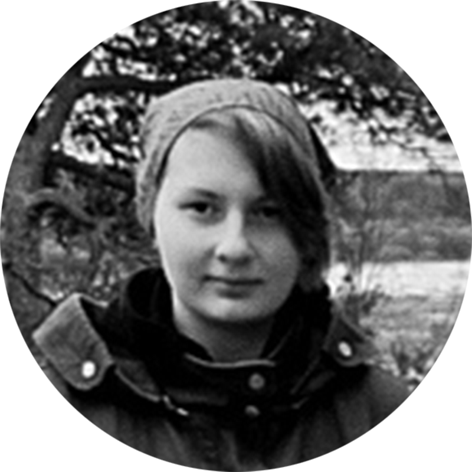
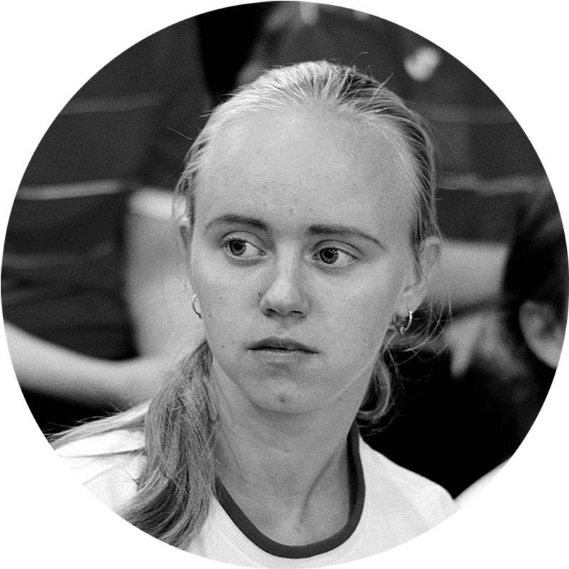
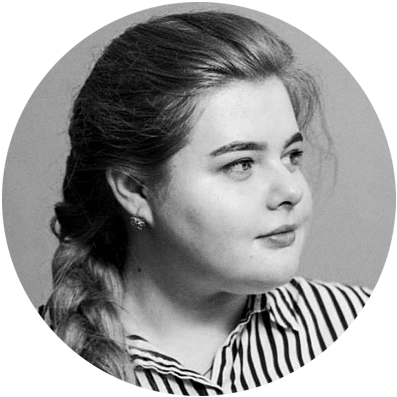
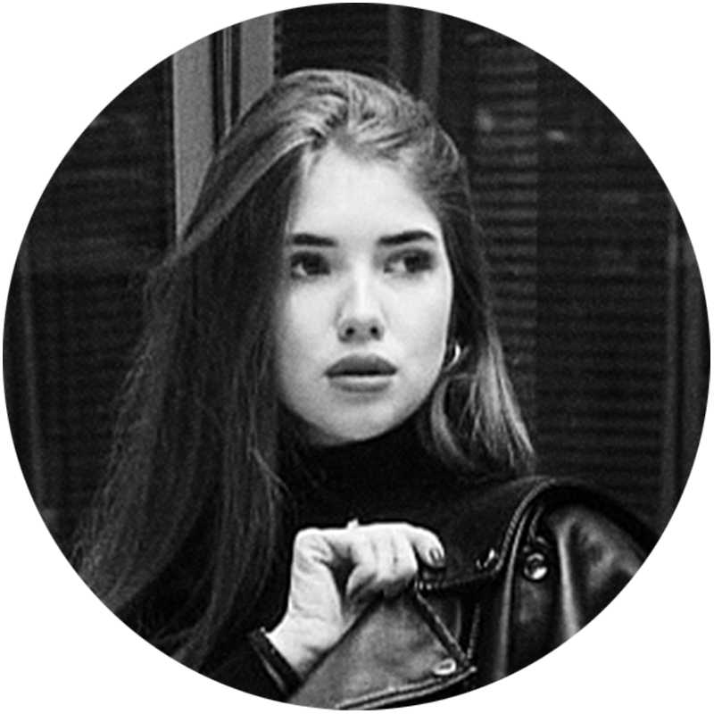
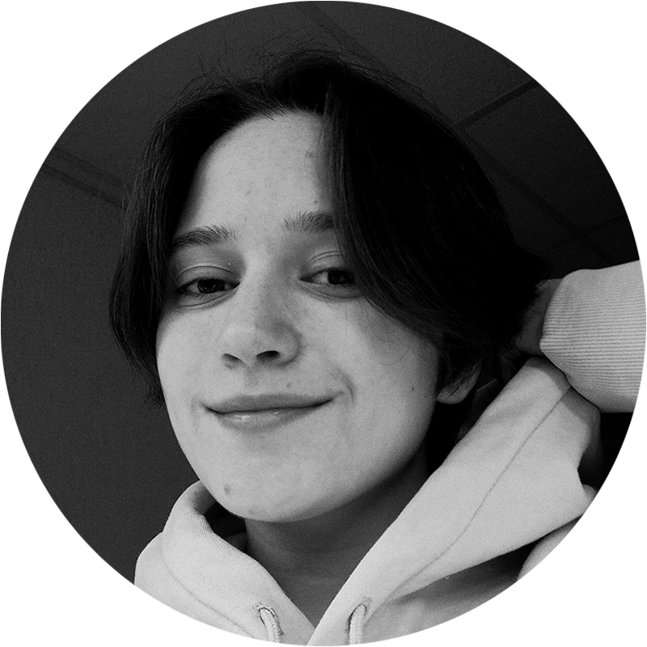

#
КОМАНДА
ОБЩЕСТВО
МЫ
STUDENЬ
ИВАНОВСКИЙ
ГОСУДАРСТВЕННЫЙ
УНИВЕРСИТЕТ
2021 STUDENЬ
САМОЕ ГЛАВНОЕ
НАС
Проект основан в сентябре 2021 группой из 6
человек, среди которых Екатерина Рыбанова —
главный редактор. Кристина Бакурская,
Вероника Смирнова, Яна Шиханова и Полина
Анцыфрова выполняют роль журналистов, а
Ольга Бекетова отвечает за дизайн сайта.
РЫБАНОВА
ЕКАТЕРИНА, главный редактор
Пишу - с начальной школы, пишу по-журналистски
- с класса 8-го, пишу по-журналистски серьезно - с
класса 10-го. Все еще ищу себя и свою нишу в
профессии, и, честно сказать, боюсь, что
доэкспериментируюсь до того, что так ни к чему и
не приду, но – время покажет.
БАКУРСКАЯ
КРИСТИНА, журналист
В прошлой жизни я хотела быть журналистом.
Теперь – просто добрым человеком. Пока думаю
о своей пользе Вселенских масштабов, с
переменным вдохновением учусь на журфаке
ИвГУ, подрабатываю за еду и крышу над головой
добрыми делами и текстом. Время от времени
пишу в своём медиапроекте "В трусах и бусах".
СМИРНОВА
ВЕРОНИКА, журналист
А еще студент и фрилансер. Мой девиз по
жизни: "За любой кипишь, если он
оплачивается". Поэтому уже несколько лет
пишу только на заказ. Из-под моей клавиатуры
вышло несколько сотен текстов на различные
тематики. Здесь раскрою тему подработки для
студентов, расскажу про фриланс и не только.
ШИХАНОВА
ЯНА, журналист

Никогда не мечтала о профессии журналиста, но
вышло так, что я с вами. Люблю писать,
постараюсь раскрыться в этом направлении.
"Лишь одно желание — побольше деньжат.
Деньги — это стимул жизни, деньги — мой крест"
АНЦЫФРОВА
ПОЛИНА, журналист
Я с детства хотела им стать, но родители были
против. Поэтому с 10-го класса я занималась
филологическими и научно-исследовательскими
работами, готовилась к поступлению на филолога,
но не прошла отбор и вот я здесь! Сейчас
маленькими и неуверенными шажочками набираю
опыт в написании статей и в целом в журналистике.
Но, стоит заметить, моя мечта детства сбылась!
БЕКЕТОВА
ОЛЬГА, дизайнер
Я поступала на журналистику с мыслью о том,
что смогу здесь развить свои таланты, но, как
оказалось, я их толком еще не знаю, как и то,
чем хочу заниматься в жизни. В общем, я умею
все по чуть-чуть и ничего в чем-то конкретном.
Несмотря на это, я продолжаю пробовать,
ошибаться, бросать и начинать с начала.
2021 STUDENЬ
ИВАНОВСКИЙ
ГОСУДАРСТВЕННЫЙ
УНИВЕРСИТЕТ